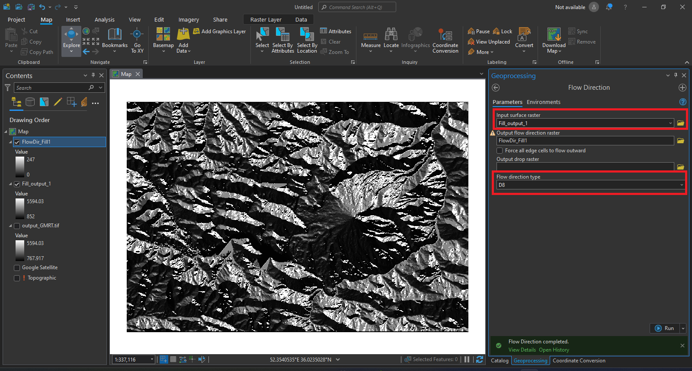
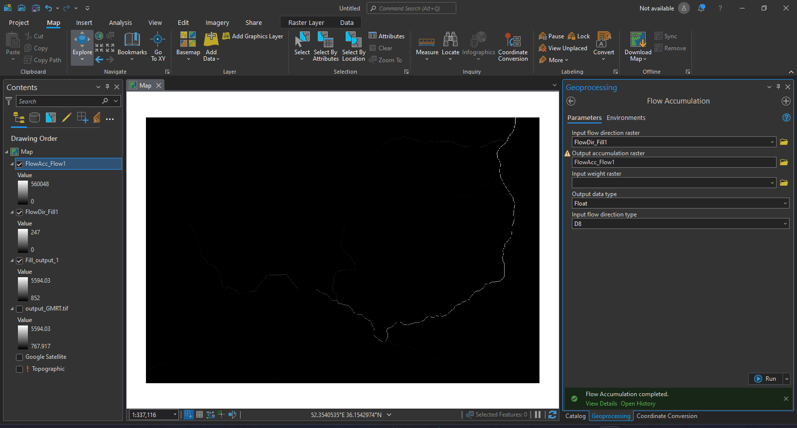
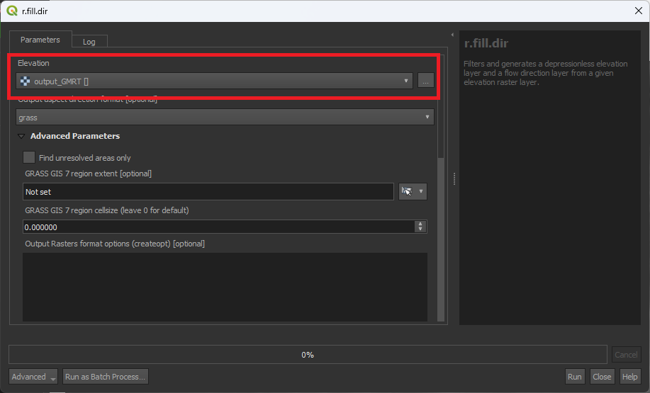
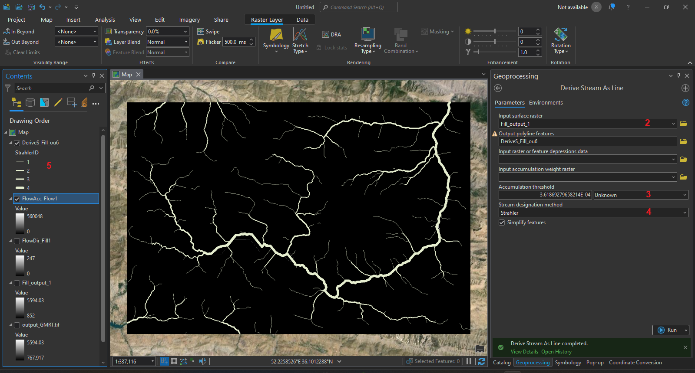
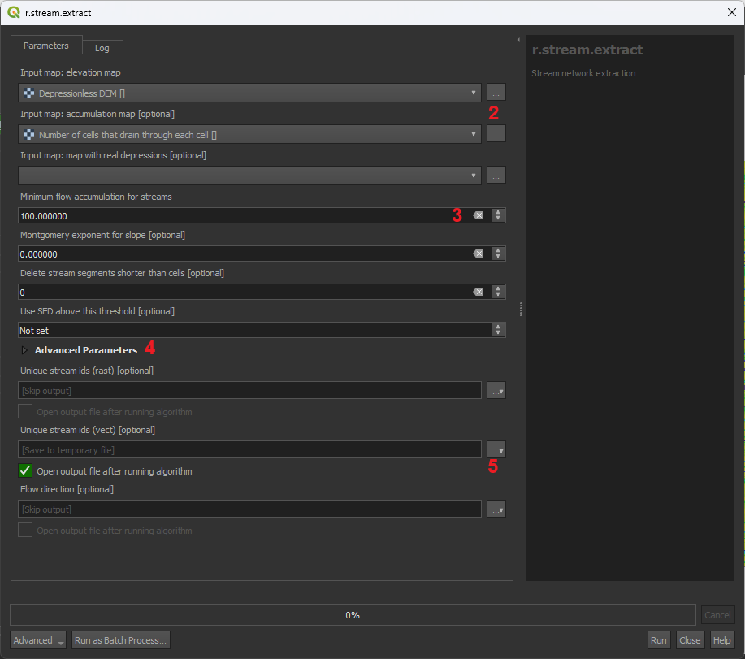
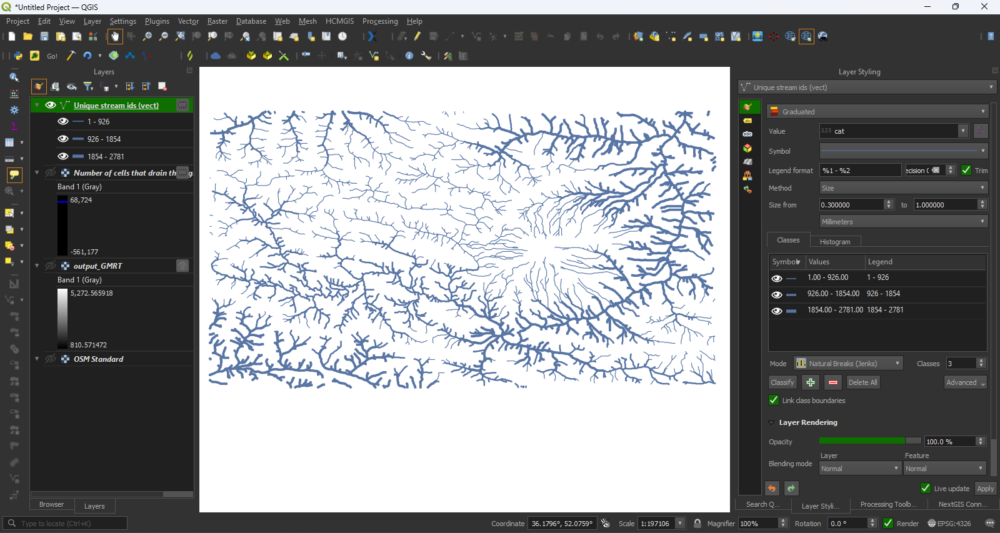
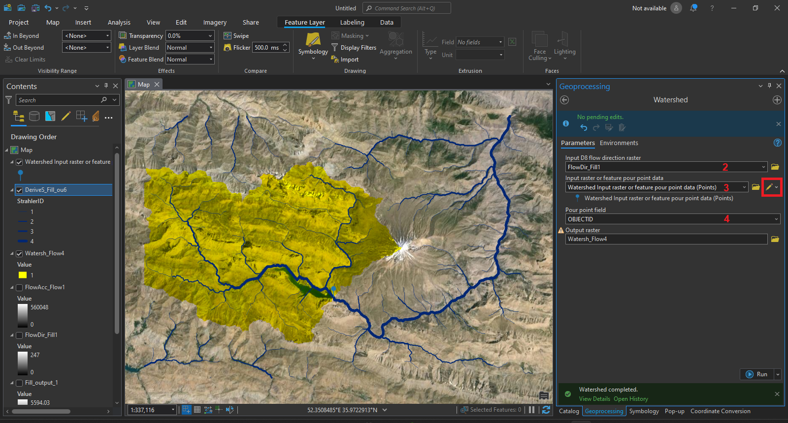

ุชุญูู ุญูุฒู ุขุจโุฎุฒ
ู ุนุฑู¶
ู ุณุฑ حرکت ุขุจโูุง سطح ฺฉ از ู ูู ุชุฑู ู ุคูููโูุง است ฺฉู ุจุงุฏ در ุชุญููโูุง ู ูุทููโุง در ูุธุฑ ฺฏุฑูุชู ุดูุฏ. ูุงุฏุฏูโฺฏุฑูุชู ุงู ู ุคูููโ در ู ุญุทโูุง ุงูุณุงูโุณุงุฎุช ู ูุฌุฑ ุจู خسارات ุฒุงุฏ در ุจุงุฑุดโูุง ุดุฏุฏ در ู ูุงุณโูุง ู ุฎุชูู ู โุดูุฏ. در ุงู ุขู ูุฒุด ฺูฏุงู ู โฺฉูู تا با ุชููุง ุฏุงุดุชู ูุงู سطح ฺู ฺฏููู ู โุชูุงูู ู ุณุฑ حرکت ุขุจโูุง سطح ู ุญูุฒูโูุง ุขุจุฎุฒ را ุจู دست ุขูุฑู .
ูุฑุงูุฏ¶
graph LR
A[Elevation] --> B{Fill};
B --> C[Derive Stream As Line];
C --> D[Streams];
B --> E[Flow Direction];
E --> F[Watershed];graph LR
A[Elevation] --> B{Fill \n r.fill.dir};
B --> C[Flow Acumulation \n r.watershed];
C --> D[Streams \n r.stream.extract];
B --> E[Flow Direction \n r.watershed];
E --> F[Watershed \n r.water.outlet];۱. ุชูู ูุงู ุณุทุญ¶
ุจุฑุง ุจู دست ุขูุฑุฏู ู ุณุฑ حرکت ุขุจโูุง سطح ู ุญูุฒูโูุง ุขุจุฎุฒ ุชููุง با ูุงู سطح (elevation/DEM) ูุงุฒ ุฏุงุฑู . ุจุฑุง ุจู دست ุขูุฑุฏู ูุงู سطح ู ูุงุจุน ู ุชุนุฏุฏ ูุฌูุฏ دارد. ู ุฑุฌู ุฑุณู ุงู ูุงู در ุงุฑุงู ุณุงุฒู ุงู ููุดูโุจุฑุฏุงุฑ است ฺฉู از ุณุงู ุงูู ุงู ุณุงุฒู ุงู ุงู ูุงู را با ุฏูุช ุจุงูุง ู โุชูุงูุฏ ุชูู ฺฉูุฏ. ุงู ุง ู ุฑุงุฌุน ุฌูุงู ุฒุงุฏ ูุฒ ูุฌูุฏ دارد ฺฉู ุงู ุฏุงุฏู را ุจู ุตูุฑุช آزاد ู ุฑุงฺฏุงู در ุงุฎุชุงุฑ ูุฑุงุฑ ู โุฏููุฏ. ฺฉ از ู ุนุชุจุฑุชุฑู ู ุฑุงุฌุน ฺฉู ุฏุณุชุฑุณ ุจู ุทู ฺฏุณุชุฑุฏูโุง ุจู ุฏุงุฏูโูุง ุงู ู ุฑุงุฌุน را ูุฑุงูู ฺฉุฑุฏู ุงุณุชุ ุณุงุช OpenTopography است. ุจุฑุง ุจู دست ุขูุฑุฏู ุฏุงุฏู سطح از ุงู ู ุฑุฌุน ู ุฑุงุญู ุฒุฑ را ุงูุฌุงู ุฏูุฏ.
- ุจู ุณุงุช OpenTopography ุจุฑูุฏ ู از ู ูู Data ฺฏุฒูู Find Data Map را ฺฉฺูฉ ฺฉูุฏ.
-
از ููุดู ู ูุฌูุฏ در ุตูุญู با ุงุณุชูุงุฏู از ابزار Select a Region ู ุญุฏูุฏู ู ุฏูุธุฑุชุงู را ุงูุชุฎุงุจ ฺฉูุฏ.
ฺูฉุชู
ููุดู ูพุงู ุงู ุตูุญู از ููุดู ESRI ุงุณุชูุงุฏู ู โฺฉูุฏ ู ูู ุงููุฏ ุณุงุฑ ุณุฑูุณโูุง ุขููุงู ESRI بر ุฑู IPูุง ุงุฑุงู ุจุณุชู است ู ุจุฑุง ู ุดุงูุฏู ุขู ุจุงุฏ از VPN ุง ุชุญุฑู โุดฺฉู ุงุณุชูุงุฏู ฺฉูุฏ.
-
بعد از ุงูุชุฎุงุจ ู ุญุฏูุฏู در بخش ูพุงุฆู ูู ู ุตูุญู ู ุฑุงุฌุน ฺฉู ู ุญุฏูุฏู ุงูุชุฎุงุจ ุดุฏู را ูพูุดุด ู โุฏููุฏ ุจุฑุง ุดู ุง ุขูุฑุฏู ู โุดูุฏ. ฺฏุฒููโูุง ู ูุฌูุฏ ุจุฑุง ุงุฑุงู ู ุนู ููุงู در تب Global & Regional DEM ุขูุฑุฏู ุดุฏู است.
-
از ฺฏุฒููโูุง ู ูุฌูุฏ ฺฏุฒูู ู ุฏูุธุฑุชุงู را با ฺฉฺูฉ بر ุญุฑูู ุงุฎุชุตุงุฑ آب ุฑฺูฏ در ุณู ุช راست ุงูุชุฎุงุจ ฺฉูุฏ.
ฺูฉุชู
ุชูุงูุช ุจู ฺฏุฒููโูุง در ุฏูุช ุง ุฑุฒูููุดู ูุงู ุงุฑุชูุงุน ู ูุญูู ู ุญุงุณุจู ุงุฑุชูุงุน ุจุฑุง ุจูููโุณุงุฒ ูุชุฌู است. ฺฏุฒูู ูพุดููุงุฏ: Global Multi-Resolution Topography (GMRT) Data Synthesis
-
بعد از ุงูุชุฎุงุจ ฺฏุฒูู ุจู ูุฑู ุฏุฑุฎูุงุณุช ูุฏุงุช ู โุดูุฏ ฺฉู در ุขู ูุฑู ุชุ ุฏูุชุ ู ูุงูโูุง ุฌุงูุจ ู ุฏูุธุฑ را از ุดู ุง ูพุฑุณุฏู ู โุดูุฏ ู در ููุงุช ุนููุงู کار ุฏุฑุฎูุงุณุช ู آدرس ุงู ู ุจุฑุง ุงุทูุงุนโุฑุณุงู ุฏุฑุจุงุฑู ุขู ุงุฏู ุดุฏู ุฏุฑุฎูุงุณุช ูพุฑุณุฏู ู โุดูุฏ.
ฺูฉุชู
ู โุชูุงูุฏ با ุซุจุชโูุงู ุฑุงฺฏุงู در ุงู ุณุงุช ุจู ุณุงุจูู ุฏุฑุฎูุงุณุชโูุง ุฎูุฏ ุฏุณุชุฑุณ ุฏุงุดุชู باشد.
-
بعد از ุซุจุชุ ุฏุฑุฎูุงุณุช ุดู ุง در ุตู ุฏุฑุฎูุงุณุชโูุง ูุฑุงุฑ ู โฺฏุฑุฏ ู ุงูุฏฺฉ بعد ฺููฉ ุฏุงูููุฏ ูุงู ู ุฏูุธุฑ ุจุฑุง ุดู ุง ูู ุงุด ุฏุงุฏู ู โุดูุฏ.
۲. ุขู ุงุฏูโุณุงุฒ ูุงูโูุง ู ูุฑุฏ ูุงุฒ ุจุฑุง ุชุญู¶
- ูุงู سطح را ุจู ูพุฑฺูู ุฌุฏุฏ ุงุถุงูู ฺฉูุฏ.
-
ุจุฑุง ุงูุฌุงู ุชุญูโูุง ุขุจโุดูุงุณ در GIS ابتدا ุจุงุฏ ุฎููู ู ูุฑุฌ (sink/depression) ฺฉู ู ู ฺฉู است در ุขู ูุฌูุฏ ุฏุงุดุชู باشد ฺฉู ู ุงูุน از حرکت آب سطح ู โุดูุฏุ را ุงุตูุงุญ ฺฉูู . ุจุฑุง ุงู کار از ابزار Fill در آدرس ุฒุฑ ุงุณุชูุงุฏู ฺฉูุฏ.
ฺูฉุชู
از ุงูโ پس از ูุงู Fill_* ุฎุฑูุฌ ู ุฑุญูู ูุจู ุจู ุนููุงู ูุงู ุงุฑุชูุงุน ุงุณุชูุงุฏู ู โฺฉูู .
-
ุฌูุช حرکت ุขุจโูุง سطح را با ابزار Flow Direction در ู ุฌู ูุนู Hydrology ู ุญุงุณุจู ฺฉูุฏ. در ูพูุฌุฑู ุงู ابزار ูุฑูุฏ را ูุงู Fill_ ู ุนุฑู ฺฉูุฏ ู Flow direction type را D8 ูุฑุงุฑ ุฏูุฏ.
 - ูุงู ุชุฌู
ุน ุขุจโูุง سطح را با ุงุณุชูุงุฏู از ابزار Flow Accumulation ู
ุญุงุณุจู ฺฉูุฏ. ูุฑูุฏ ุงู ู
ุฑุญูู ุฎุฑูุฌ ู
ุฑุญูู ูุจู (FlowDir_Fill) است.

{kind=link}
{kind=link}
- ูุงู سطح را ุจู ูพุฑฺูู ุฌุฏุฏ ุงุถุงูู ฺฉูุฏ.
-
ุจุฑุง ุงูุฌุงู ุชุญูโูุง ุขุจโุดูุงุณ در GIS ابتدا ุจุงุฏ ุฎููู ู ูุฑุฌ (sink/depression) ฺฉู ู ู ฺฉู است در ุขู ูุฌูุฏ ุฏุงุดุชู باشد ฺฉู ู ุงูุน از حرکت آب سطح ู โุดูุฏ از ุจู ุจุจุฑู . ุจุฑุง ุงูโฺฉุงุฑ از آدرس ุฒุฑ در Processing Toolbox ابزار r.fill.dir را ุงูุชุฎุงุจ ฺฉูุฏ ู با ุงูุชุฎุงุจ ูุงู ุงุฑุชูุงุน ุขู را اجرا ฺฉูุฏ.
 ฺูฉุชู
از ุงูโ پس از ูุงู Depressionless DEM ุฎุฑูุฌ ู ุฑุญูู ูุจู ุจู ุนููุงู ูุงู ุงุฑุชูุงุน ุงุณุชูุงุฏู ู โฺฉูู .
-
ساخت ูุงู Flow Accumulation: ุจุฑุง ساخت ุงู ูุงู ابزار r.watershed را از آدرس ุฒุฑ ุงูุชุฎุงุจ ฺฉูุฏ.
ุงู ابزار ุฎุฑูุฌโูุง ู ุชููุน را ุจุฑุง ุชุญููโูุง ุขุจโุดูุงุณ ุงุฑุงุฆู ู โฺฉูุฏ.از ฺฏุฒููโูุง ู ูุฌูุฏ ฺฏุฒูู Enable Single Flow Direction (D8) را ุงูุชุฎุงุจ ฺฉูุฏ.
ุจุฑุง ุชุญูู ู ุฏูุธุฑ ุงู ุขู ูุฒุด ู ุง ุชููุง ุจู ุฎุฑูุฌ Flow Accumulation ู Flow Direction ูุงุฒ ุฏุงุฑู . ุจุฑุง ุฏุฑุงูุช ุงู ุฎุฑูุฌโูุง ุชููุง ฺฏุฒููโูุง Number of cells that drain through each cell ู Drainage Direction را ุงูุชุฎุงุจ ฺฉูุฏ ู ุจูู ฺฏุฒููโูุง را Skip ฺฉูุฏ.
{kind=link}
{kind=link}
{kind=link}
۳. ุชูู ูุงู ู ุณุฑ حرکت ุขุจโูุง ุณุทุญ¶
-
از ุฒุฑ ู ุฌู ูุนู ุชุญููโูุง Hydrology ابزار Derive Stream As Line را ุงูุชุฎุงุจ ฺฉูุฏ.
-
ูุงู ุงุตูุงุญ ุดุฏู ุงุฑุชูุงุน (fill_) را ุจู ุนููุงู Input ูุงุฑุฏ ฺฉูุฏ.
- در بخش Accumulation threshold عدد ฺฉู ุจุฑุง ุดูุงุณุง ู ุณุฑ آب است را بر اساس ูุฑูุฏ ุจู ุดู ุง ูพุดููุงุฏ ู โุฏูุฏ. ูุฑฺู عدد ุจุฒุฑฺฏโุชุฑ باشد ุฎุฑูุฌ ุดุงู ู ู ุณุฑูุง ุงุตูโุชุฑ ู ูุฑฺูุฏุฑ ฺฉฺฺูฉโุชุฑ باشد ุดุงู ู ู ุณุฑูุง ูุฑุนโุชุฑ ู โุดูุฏ.
- در بخش Stream designation method ุฑูุด Strahler را ุงูุชุฎุงุจ ฺฉูุฏ.
- ุฎุฑูุฌ ูุงูโุง ฺูฉุชูุฑ از ุฌูุณ خط است ฺฉู در Attribute table ุขู ููุฏ ุจู ูุงู
StrahlerID ูุฌูุฏ دارد ฺฉู در ุขู ุณูุณูู ู
ุฑุงุชุจ ู
ุณุฑูุง آب بر اساس ุญุฌู
ุชุฌู
ุน ุฌุฑุงู آب ูุงุฑุฏ ุดุฏู است. ู
โุชูุงูุฏ از ุงู ููุฏ ุจุฑุง ูู
ุงุด ููุดู ุงุณุชูุงุฏู ฺฉูุฏ.

{kind=link}
-
ุจุฑุง ุจู دست ุขูุฑุฏู ู ุณุฑ حرکت ุขุจโูุง سطح ابزار r.stream.extract را از ู ุณุฑ ุฒุฑ ุงูุชุฎุงุจ ฺฉูุฏ.
-
در ูพูุฌุฑู باز ุดุฏู ูุงู ุงุฑุชูุงุน ุงุตูุงุญ ุดุฏู ู ูุงู Flow Acumulation ุณุงุฎุชู ุดุฏู در ู ุฑุญูู ูุจู را ุจู ุนููุงู ูุฑูุฏ ุงูุชุฎุงุจ ฺฉูุฏ.
-
در ูุณู ุช Minimum acumulation for stream از ุดู ุง عدد ู โุฎูุงูุฏ ฺฉู اگر ุชุฌู ุน آب از ุขู ุจุดุชุฑ ุจูุฏ ุจู ุนููุงู ู ุณุฑ حرکت آب سطح ุดูุงุณุง ฺฉูุฏ. ูุฑฺู عدد ุจุฒุฑฺฏโฺฉุชุฑ باشد ู ุณุฑูุง ุงุตูโุชุฑ ู ูุฑฺู ฺฉฺฺูฉโุชุฑ باشد ู ุณุฑูุง ูุฑุนโุชุฑ را ุดูุงุณุง ู โฺฉูุฏ.
ฺูฉุชู
ูพุดููุงุฏ ู โุดูุฏ از عدد ุจุฒุฑฺฏโุชุฑ (ู ุซูุงู 100 ) ุดุฑูุน ฺฉูุฏ ู اگر ู ุณุฑูุง ูุฑุนโุชุฑ را ูุงุฒ ุฏุงุดุชุฏ عدد ฺฉฺฺูฉโุชุฑ ูุงุฑุฏ ฺฉูุฏ.
-
در بخش v.out.ogr output type ููุน ุฎุฑูุฌ را line ุงูุชุฎุงุจ ฺฉูุฏ.
- در بخش ุงูุชุฎุง ูพูุฌุฑู از ุฎุฑูุฌโูุง ูุงุจู ู
ุญุงุณุจู ุชููุง Unique stream ids (vect) ฺฉู ุดุงู
ู ู
ุณุฑูุง ฺูฉุชูุฑ حرکت ุขุจโูุง سطح را ุงูุชุฎุงุจ ฺฉูุฏ ู ุจูู را Skip ฺฉูุฏ.
 - در Attribute table ูุงู ุฎุฑูุฌ ู
ุฑุญูู ูุจูุ ุณูุณูู ู
ุฑุงุชุจ ู
ุณุฑูุง آب بر اساس ู
ุฒุงู آب ุชุฌู
ุน در ููุฏ cat ุฐุฎุฑู ุดุฏู است ฺฉู بر اساس ุขู ู
โุชูุงูู
ูุญูู ูู
ุงุด ูุงู را ุชุบุฑ ุฏูุฏ.

{kind=link}
{kind=link}
۴. ุชุนู ุญูุฒูโูุง ุขุจโุฎุฒ¶
- از ู ุฌู ูุนู ุงุจุฒุงุฑูุง ุชุญูู Hydrology ابزار Watershed را ุงูุชุฎุงุจ ฺฉูุฏ.
- در ูพูุฌุฑู ุงู ابزار ูุงู ุฌูุช ุฌุฑุงู (FlowDir_) را ุจู ุนููุงู Input D8 flow direction ู ุนุฑู ฺฉูุฏ.
-
ููุทูโุง ฺฉู ู โุฎูุงูุฏ ุญูุฒู ุขุจโุฎุฒ ุขู را ู ุญุงุณุจู ฺฉูุฏ را در بخش Input raster or feature pour data ู ุนุฑู ฺฉูุฏ.
ฺูฉุชู
از ุงฺฉูู ู ุฏุงุฏ ุฌูู ุงู بخش ู โุชูุงูุฏ ููุทู را در ููุดู ุจู ุตูุฑุช دست ู ุดุฎุต ฺฉูุฏ. ุฏูุช ฺฉูุฏ ฺฉู ููุทู ุงูุชุฎุงุจ ุจุงุฏ در ู ุณุฑูุง حرکت ุขุจโูุง سطح باشد. در ุงู ู ุซุงู ููุทู ู ูุชู ุจู سد ูุงุฑ ุงูุชุฎุงุจ ุดุฏู تا ุญูุฒู ุขุจโุฎุฒ ุงู سد ุญุงุตู ุดูุฏ.
-
ููุฏ OBJECTID ุง FID را ุจู ุนููุงู Pour point field ู ุนุฑู ฺฉูุฏ.
 - ู โุชูุงูุฏ با ุงุณุชูุงุฏู از ابزار Raster to Polygon ุจุฑุง ุชุจุฏู ูุงู ุญูุฒู ุขุจโุฎุฒ ุจู ฺูฉุชูุฑ ุงุณุชูุงุฏู ฺฉูุฏ.
{kind=link}
ุจุฑุง ุชุนู ุญูุฒูโูุง ุขุจโุฎุฒ در QGIS از ابزار r.water.outlet در ู ุณุฑ ุฒุฑ ุงุณุชูุงุฏู ู โฺฉูู .
- در ูพูุฌุฑู ابزار ูุงู Drainage Direction ุชูู ุดุฏู در ู ุฑุญูู ุฏูู را ุงูุชุฎุงุจ ฺฉูุฏ.
-
در ูุณู ุช coordinate of outlet point ู ุฎุชุตุงุช ููุทูโุง را ฺฉู ู โุฎูุงูุฏ ุญูุฒู ุขุจโุฎุฒ را ุจู دست ุขูุฑุฏ ูุงุฑุฏ ฺฉูุฏ.
ฺูฉุชู
از ... ุฌูู ุงู بخش ู โุชูุงูุฏ ููุทู را در ููุดู ุจู ุตูุฑุช دست ู ุดุฎุต ฺฉูุฏ. ุฏูุช ฺฉูุฏ ฺฉู ููุทู ุงูุชุฎุงุจ ุจุงุฏ در ู ุณุฑูุง حرکت ุขุจโูุง سطح باشد. در ุงู ู ุซุงู ููุทู ู ูุชู ุจู سد ูุงุฑ ุงูุชุฎุงุจ ุดุฏู تا ุญูุฒู ุขุจโุฎุฒ ุงู سد ุญุงุตู ุดูุฏ.
-
ู โุชูุงูุฏ با ابزار r.to.vect ุฎุฑูุฌ ุจู دست ุขู ุฏู در ู ุฑุญูู ูุจู را ุจู ฺูฉุชูุฑ ุชุจุฏู ฺฉูุฏ.
{kind=link}
{kind=link}